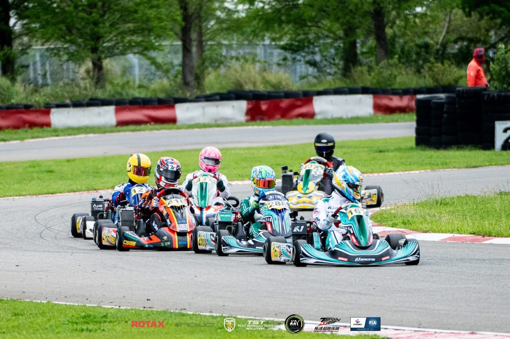
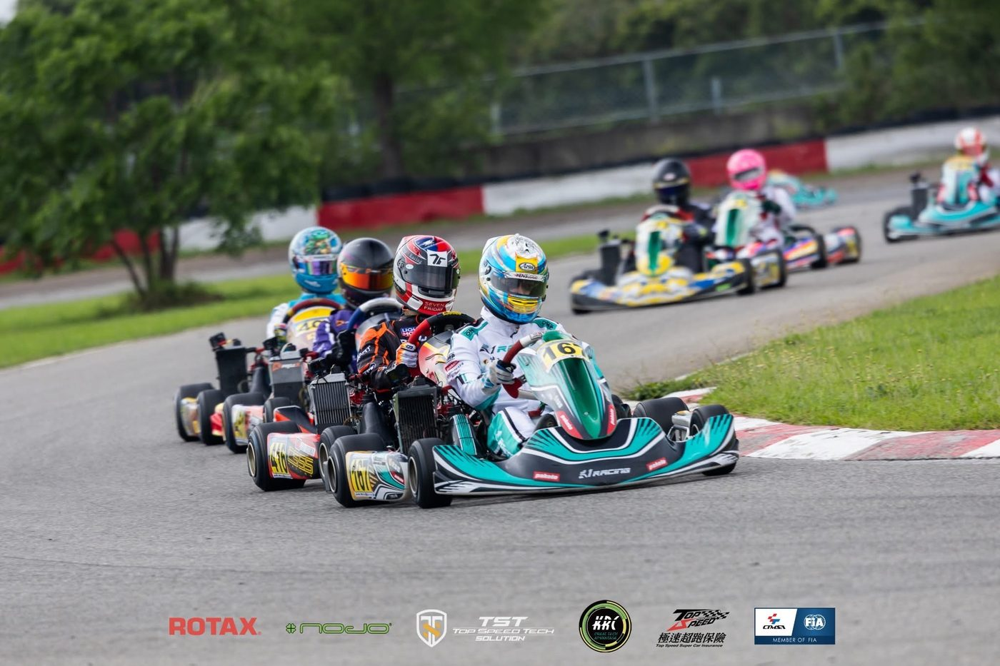
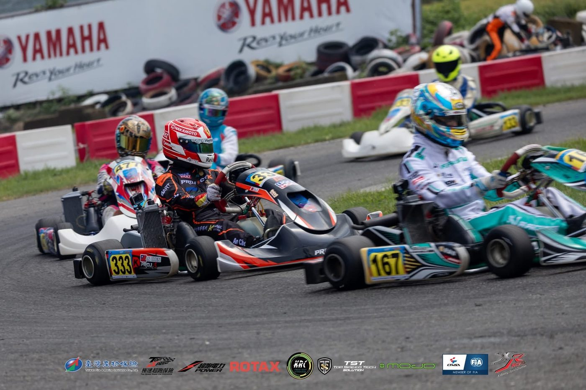

01我的故事
我來自台中，15歲開始計畫成為職業賽車手；19歲開始練習競技卡丁車，每週至少一次的訓練是我的日常，在歐洲比賽是我的目標，希望有機會讓我可以在歐洲常態出賽衝擊職業賽車手的目標



我來自台中，15歲開始計畫成為職業賽車手；19歲開始練習競技卡丁車，每週至少一次的訓練是我的日常，在歐洲比賽是我的目標，希望有機會讓我可以在歐洲…
我來自台中，15歲開始計畫成為職業賽車手；19歲開始練習競技卡丁車，每週至少一次的訓練是我的日常，在歐洲比賽是我的目標，希望有機會讓我可以在歐洲常態出賽衝擊職業賽車手的目標



歷屆成績 · 更新於 2026/07/15
訓練與參賽計畫
透過卡丁車訓練培養賽車技術，目標成為一位在歐洲一線比賽常態出賽的職業賽車手
取得2026 TKC MAX組年度前三，國際Formula 4比賽組別前10名
我想達到…
十一月至隔年二月
讓身體從賽季後開始恢復，訓練儲備隔年賽季需要的肌力與體能。每週定期前往賽車場訓練專項技術兩天，每週四天訓練肌力重量訓練與體能訓練(培養賽車所需的煞車力道、轉向握力、連續練習時的體能儲備)
三月至十月
預計參加台灣四至八場比賽，海外移地訓練/比賽五周。
在台灣時規劃每週定期前往賽車場訓練專項技術三天，每週三天訓練肌力重量訓練與體能訓練(培養賽車所需的煞車力道、轉向握力、連續練習時的體能儲備)；並定期請教練協助訓練調整體能與肌力狀態
海外卡丁車移地訓練週計劃一次至少七天，兩天交通日、週三/週四/週五安排練車訓練、週六/週日參加比賽
Formula 4移地訓練週計劃一年兩次共六天，訓練方程式駕駛技巧；培養將競技卡丁車駕駛能力銜接成能駕駛更高階賽車的能力
每週一天
讓身體從訓練後開始恢復 試情況安排物理治療恢復身體的肌力與體能
以競技卡丁車或Formula 4賽車訓練技術，一週一至三天。每週兩至四天以肌力重量訓練與體能訓練，培養賽車所需的煞車力道、轉向握力、連續練習時的體能儲備
以競技卡丁車或Formula 4賽車訓練駕駛技術，一週一至三天
學習各種進攻、防守之技巧，以比賽訓練動態起跑與鬥車技巧
1.每月定期聘請教練做1對1鬥車訓練
2.以Data分析改正缺點，加強速度
1. 以意象訓練培養模擬比賽過程的各種可能性，加強在比賽中抗壓能力與比賽關鍵時刻的心理建設
2.賽後行車影片與Data會議檢討
3. 患部恢復提升精神措施：例行性復健、增生療法、震波或PRP
需求項目與數量（依官方頁面）
| 運動防護費 | NT$ 210,000 |
| 訓練器材裝備費 | NT$ 2,808,000 |
| 訓練器材裝備費 | NT$ 1,320,000 |
| 訓練器材裝備費 | NT$ 720,000 |
| 移地訓練費 | NT$ 400,000 |
| 訓練器材裝備費 | NT$ 250,000 |
| 參賽報名費 | NT$ 128,000 |
| 參賽報名費 | NT$ 96,000 |
| 移地訓練費 | NT$ 1,400,000 |
| 參賽旅運費 | NT$ 6,600,000 |
| 經費需求合計 | NT$ 13,932,000 |
標示「不公開」者為官方頁面未揭露之欄位。
網路公開搜尋結果，均附原始出處
ESRacing網站的呂廣志卡丁車成績頁，列出2024至2025年TKC台灣卡丁車錦標賽各站成績。
出處：https://www.esracing.tw/jsprt_achv_player/%e5%91%82%e5%bb%a3%e5%bf%97/2025年TKC台灣卡丁車錦標賽麗寶站成績，呂廣志在Senior B組排名第2。
出處：https://www.esracing.tw/jsprt_achv_season/2025-taiwan-karting-championship/2025-tkc-%e5%8f%b0%e7%81%a3%e5%8d%a1%e4%b8%81%e8%bb%8a%e9%8c%a6%e6%a8%99%e8%b3%bd-%e9%ba%97%e5%af%b6%e7%ab%99/